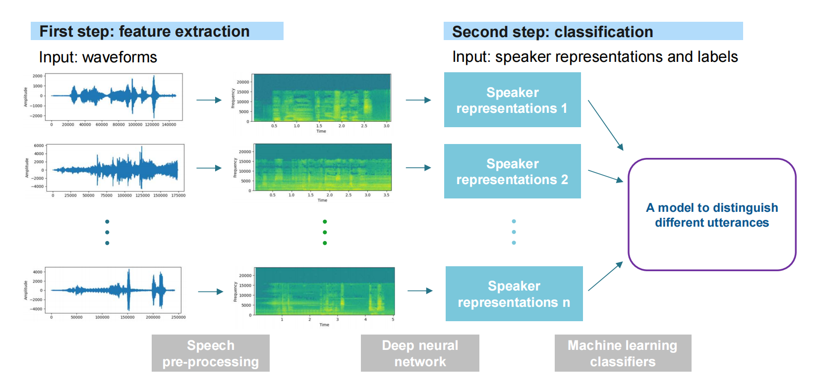
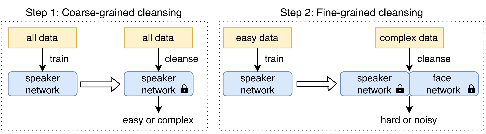
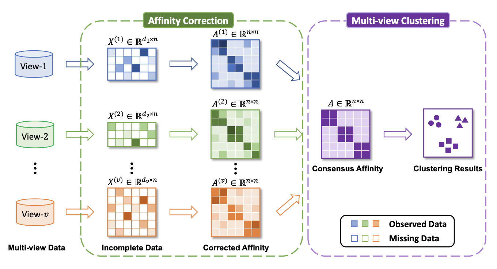
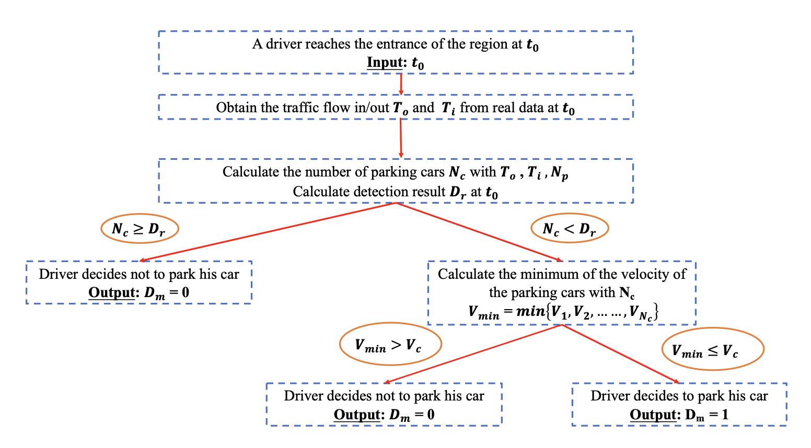

I am a student from the Chinese University of Hong Kong, Shenzhen. I am currently studying Data Science and Big Data Technology. I participated the University London College (UCL) Summer School in 2023.
I am the recipient of the 21st and the 22nd Undergraduate Research Award (URA) of CUHK-Shenzhen, and the Dean's List of 2022-2023 academic year.
My research experience includes on-street parking solutions (supervisor: Prof. Ruizhi Liao), clustering algorithms (supervisor: Prof. Wenyi Li), speaker recognition (supervisor: Prof. Haizhou Li), and big data marketing (supervisor: Prof. Li Yang).
I am interested in exploring how machine learning or deep learning methods can provide insights to marketing strategy.
• Yu F, Zhao R*, Shi Z*, Lu Y, Fan J, Zeng Y, Mao J, Li W. Boosting Spectral Clustering on Incomplete Data via Kernel Correction and Affinity Learning. In 37th Conference on Neural Information Processing Systems (NeurIPS’2023).
*Contributed equally to this work
• Yu F, Shi Z, Ma Y, Mao J, Li W. From Incompleteness to Unity: A Framework for Multi-view Clustering with Missing Values. In International Conference on Neural Information Processing (ICONIP’2023).
• Tao R, Lee KA, Shi Z, Li H. Speaker Recognition with Two-Step Multi-Modal Deep Cleansing. In 2023 IEEE International Conference on Acoustics, Speech and Signal Processing (ICASSP’2023).
• Ou Q, Zheng W, Shi Z, Liao R. Driver-Side and Traffic-Based Evaluation Model for On-street Parking Solutions. In 18th International Conference on Intelligent Environments (IE'2022). (Best Presentation Award)
Video Advertising Difference between Luxurious and Mainstream Products (Research Assistant; Supervisor: Prof. Li Yang)
Connection between Brand Identities and Advertisement Video Utterances (Course Project: Big Data Marketing)

Deep Learning for Speaker Recognition (Research Assistant; Supervisor: Prof. Haizhou Li)

Clustering with Incomplete Observation (Research Assistant; Supervisor: Prof. Wenye Li)

Models for On-Street Parking Solutions (Research Assistant; Supervisor: Prof. Ruizhi Liao)
